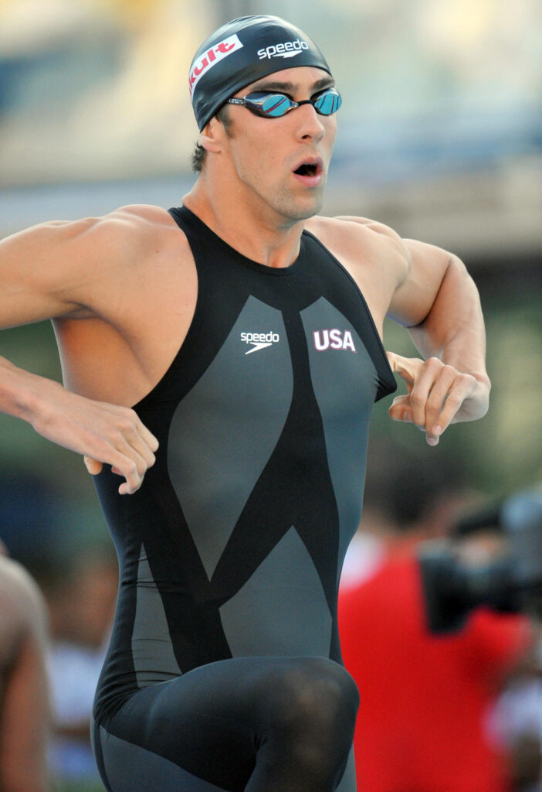

In the early 21st century, NASA collaborated with swimsuit manufacturers to apply aerospace technology to competitive swimming. The result was the creation of high-tech swimsuits, often referred to as "supersuits" (NASA, 2008).
The LZR Racer Suit by Speedo utilized low-drag materials, seamless construction, and strategic compression zones to streamline the swimmer's shape and reduce form drag. NASA’s wind tunnels provided precise measurements of drag reduction on swimsuit fabrics and designs, while computational fluid dynamics (CFD) simulations modeled water flow around the swimmer to optimize suit design.
Swimmers wearing the LZR Racer set numerous world records, highlighting the suit's effectiveness in reducing drag. However, the significant advantage provided by supersuits led to debates about fairness in competition, prompting the International Swimming Federation (FINA) to ban full-body polyurethane suits in 2010 (Barbosa et al., 2018).
Michal Phelps Wearing Spedo LZR Racer Supersuit made by NASA: Image source
Science and History Institute